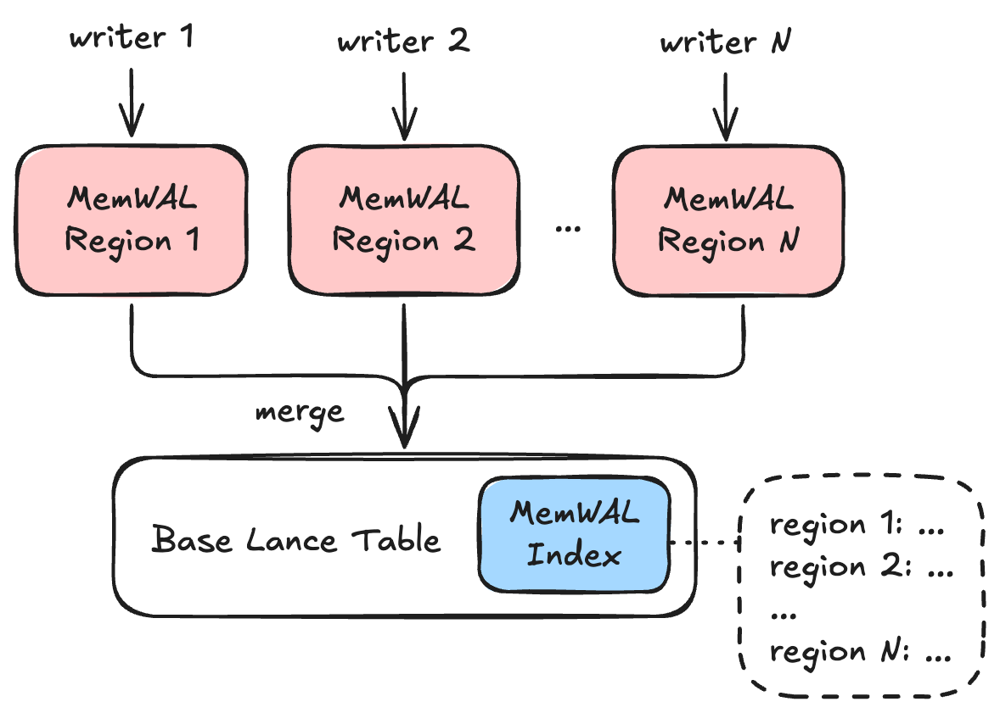
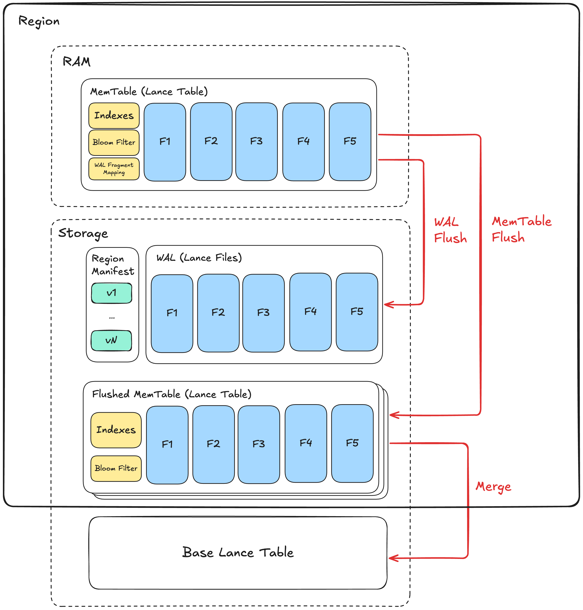

MemTable & WAL Specification (Experimental)¶
Lance MemTable & WAL (MemWAL) specification describes a Log-Structured-Merge (LSM) tree architecture for Lance tables, enabling high-performance streaming write workloads while maintaining indexed read performance for key workloads including scan, point lookup, vector search and full-text search.
Note
MemWAL requires the table to have an unenforced primary key defined.
Overall Architecture¶

Base Table¶
Under the MemWAL setup, the Lance table is called the base table.
Region¶
A Region is the main unit to horizontally scale out writes.
Each region has exactly one active writer at any time, using epoch-based fencing to guarantee single-writer semantics without distributed coordination. Writers claim a region by incrementing the writer epoch, then write data to that region. Data in each region is merged into the base table gradually in the background.
Regions must contain rows that are mutually exclusive. Two regions contain rows with the same primary key, the following scenario can cause data corruption:
- Region A receives a write with primary key
pk=1at time T1 - Region B receives a write with primary key
pk=1at time T2 (T2 > T1) - The row in region B is merged into the base table first
- The row in region A is merged into the base table second
- The row from Region A (older) now overwrites the row from Region B (newer)
This violates the expected "last write wins" semantics. By ensuring each primary key is assigned to exactly one region via the region spec, merge order between regions becomes irrelevant for correctness.
MemWAL Index¶
A MemWAL Index is the centralized structure for all MemWAL metadata for a base table. A table has at most one MemWAL index. It stores:
- Configuration: Region specs defining how rows map to regions, and which indexes to maintain
- Merge progress: Last generation merged to base table for each region
- Index catchup progress: Which merged generation each base table index has been rebuilt to cover
- Region snapshots: Point-in-time snapshot of all region states for read optimization
The index is the source of truth for configuration and merge progress, but region state snapshots are for read-only optimization (each region's manifest is authoritative for its own state).
Writers read the MemWAL index to get configuration (region specs, maintained indexes) before writing. Readers use the index to get a snapshot of all region states, then query each region's data alongside the base table and merge results at runtime.
A background process periodically updates region snapshots by listing regions and loading their manifests. See MemWAL Index Details for the complete structure.
Region Architecture¶

Within a region, writes enter its MemTable and are flushed to the regional WAL for durability. The MemTable is flushed to storage as a Flushed MemTable based on memory pressure and other conditions. Flushed MemTables are then asynchronously merged into the base table.
MemTable¶
An in-memory Lance table that buffers incoming writes. Each write inserts a fragment in the MemTable, making data immediately queryable without waiting for persistence.
In addition to the data fragments, a MemTable maintains:
- Primary key bloom filter: For efficient existence checks during staleness detection
- In-memory index builders: Incremental index structures that mirror base table indexes, enabling indexed queries on unflushed data
- WAL fragment mapping: Tracks correspondence between MemTable fragment IDs and WAL entry IDs for index remapping during flush
WAL¶
Write-Ahead Log (WAL) serves as the durable storage of MemTable. A write to MemTable must be persisted also to the WAL to become fully durable. Every time we write to the WAL, we call it a WAL Flush.
The whole LSM tree's durability is determined by the durability of the WAL. For example, if WAL is stored in Amazon S3, it has the 99.999999999% durability. If it is stored in local disk, the data will be lost if the local disk is damaged.
A WAL consists of an ordered sequence of WAL entries starting from 1. Each entry is a Lance format file.
The writer epoch is stored in the Lance file's schema metadata with key writer_epoch for fencing validation during replay.
Each WAL entry is stored within the WAL directory of the region located at _mem_wal/{region_id}/wal.
WAL files use bit-reversed 64-bit binary naming to distribute files evenly across the directory keyspace.
This optimizes S3 throughput by spreading sequential writes across S3's internal partitions, minimizing throttling.
The filename is the bit-reversed binary representation of the entry ID with suffix .lance.
For example, entry ID 5 (binary 000...101) becomes 1010000000000000000000000000000000000000000000000000000000000000.lance.
Flushed MemTable¶
A flushed MemTable is a complete Lance table created by flushing the MemTable to storage.
Note
This is called Sorted String Table (SSTable) or Sorted Run in many LSM-tree literatures and implementations. However, since our MemTable is not sorted, we just use the term flushed MemTable to avoid confusion.
Each flushed MemTable has a generation number starting from 1 that identifies its relative position among all flushed MemTables in the region.
When MemTable with generation i is flushed, the next MemTable gets generation number i+1.
The MemTable of generation i is flushed to _mem_wal/{region_uuid}/{random_hash}_gen_{i}/ directory, where {random_hash} is an 8-character hex value generated at flush time.
The directory content follows Lance table layout.
The actual directory path for each generation is recorded in the region manifest's flushed_generations list (see Region Manifest).
Generation numbers determine merge order: lower numbers represent older data and must be merged to the base table first to preserve correct upsert semantics.
Region Manifest¶
Each region has a manifest file containing epoch-based fencing tokens, WAL pointers, and flushed MemTable generation trackers. This is the source of truth for region state.
The manifest is serialized as a protobuf binary file using the RegionManifest message.
The manifest contains:
- Fencing state:
writer_epoch(writer fencing token) - WAL pointers:
replay_after_wal_id(last entry flushed to MemTable),wal_id_last_seen(last entry seen at manifest update) - Generation trackers:
current_generation(next generation to flush) - Flushed generations:
flushed_generationslist of generation number and directory path pairs (e.g., generation 1 ata1b2c3d4_gen_1)
Note: wal_id_last_seen is a hint that may be stale since it's not updated on WAL write.
The manifest itself is atomically written, but recovery must try to get newer WAL files to find the actual state beyond this hint.
RegionManifest protobuf message
message RegionManifest {
// Region identifier (UUID v4).
UUID region_id = 11;
// Manifest version number.
// Matches the version encoded in the filename.
uint64 version = 1;
// Region spec ID this region was created with.
// Set at region creation and immutable thereafter.
// A value of 0 indicates a manually-created region not governed by any spec.
uint32 region_spec_id = 10;
// Writer fencing token - monotonically increasing.
// A writer must increment this when claiming the region.
uint64 writer_epoch = 2;
// The most recent WAL entry ID that has been flushed to a MemTable.
// During recovery, replay starts from replay_after_wal_id + 1.
uint64 replay_after_wal_id = 3;
// The most recent WAL entry ID at the time manifest was updated.
// This is a hint, not authoritative - recovery must list files to find actual state.
uint64 wal_id_last_seen = 4;
// Next generation ID to create (incremented after each MemTable flush).
uint64 current_generation = 6;
// Field 7 removed: merged_generation moved to MemWalIndexDetails.merged_generations
// which is the authoritative source for merge progress.
// List of flushed MemTable generations and their directory paths.
repeated FlushedGeneration flushed_generations = 8;
}
Manifests are versioned starting from 1 and immutable. Each update creates a new manifest file at the next version number. Updates use put-if-not-exists or file rename to ensure atomicity depending on the storage system. If two processes compete, one wins and the other retries.
To commit a manifest version:
- Compute the next version number
- Write the manifest to
{bit_reversed_version}.binpbusing put-if-not-exists - In parallel best-effort write to
version_hint.jsonwith{"version": <new_version>}(failure is acceptable)
To read the latest manifest version:
- Read
version_hint.jsonto get the latest version hint. If not found, start from version 1 - Check existence for subsequent versions from the starting version
- Continue until a version is not found
- The latest version is the last found version
This approach uses HEAD requests instead of LIST operations in cloud storage, which is generally faster and is friendly to systems like S3 Express that do not support lexicographically sorted listing.
Note
This works because the write rate to region manifests is significantly lower than read rates. Region manifests are only updated when region metadata changes (MemTable flush), not on every write. This ensures HEAD requests will eventually terminate and find the latest version.
All region manifest versions are stored in _mem_wal/{region_id}/manifest directory.
Each region manifest version file uses bit-reversed 64-bit binary naming, the same scheme as WAL files.
For example, version 5 becomes 1010000000000000000000000000000000000000000000000000000000000000.binpb.
The region manifest is updated atomically in the following cases:
| Trigger | Fields Updated | Details |
|---|---|---|
| Initialization & Recovery | writer_epoch |
Incremented when writer claims the region |
| MemTable Flush | replay_after_wal_id, wal_id_last_seen, current_generation, flushed_generations |
After flushing MemTable to storage |
| MemWAL Index Builder | wal_id_last_seen |
Periodically scans WAL entries and updates hint |
| Garbage Collector | flushed_generations |
Removes entries for deleted flushed MemTables |
Note
WAL flush does not update the manifest to keep the hot write path fast.
Writers use epoch-based fencing (writer_epoch) to ensure single-writer semantics.
See Writer Fencing for details.
MemWAL Index Details¶
The MemWAL Index uses the standard index storage at _indices/{UUID}/.
The index stores its data in two parts:
- Index details (
index_detailsinIndexMetadata): Contains configuration, merge progress, and snapshot metadata - Region snapshots: Stored as a Lance file or inline, depending on region count
Index Details¶
The index_details field in IndexMetadata contains a MemWalIndexDetails protobuf message with the following key fields:
Configuration fields (region_specs, maintained_indexes) are the source of truth for MemWAL configuration.
Writers read these fields to determine how to partition data and which indexes to maintain.
Merge progress (merged_generations) tracks the last generation merged to the base table for each region.
This field is updated atomically with merge-insert data commits, enabling conflict resolution when multiple mergers operate concurrently.
Each entry contains the region UUID and generation number.
Index catchup progress (index_catchup) tracks which merged generation each base table index has been rebuilt to cover.
When data is merged from a flushed MemTable to the base table, the base table's indexes are rebuilt asynchronously.
During this window, queries should use the flushed MemTable's pre-built indexes instead of scanning unindexed data in the base table.
See Index Catchup and Read Path for details.
Region snapshot fields (snapshot_ts_millis, num_regions, inline_snapshots) provide a point-in-time snapshot of region states.
The actual region manifests remain authoritative for region state.
When num_regions is 0, the inline_snapshots field may be None or an empty Lance file with 0 rows but proper schema.
MemWalIndexDetails protobuf message
message MemWalIndexDetails {
// Snapshot timestamp (Unix timestamp in milliseconds).
int64 snapshot_ts_millis = 1;
// Number of regions in the snapshot.
// Used to determine storage format without reading the snapshot data.
uint32 num_regions = 2;
// Inline region snapshots for small region counts.
// When num_regions <= threshold (implementation-defined, e.g., 100),
// snapshots are stored inline as serialized bytes.
// Format: Lance file bytes with the region snapshot schema.
optional bytes inline_snapshots = 3;
// Region specs defining how to derive region identifiers.
// This configuration determines how rows are partitioned into regions.
repeated RegionSpec region_specs = 7;
// Indexes from the base table to maintain in MemTables.
// These are index names referencing indexes defined on the base table.
// The primary key btree index is always maintained implicitly and
// should not be listed here.
//
// For vector indexes, MemTables inherit quantization parameters (PQ codebook,
// SQ params) from the base table index to ensure distance comparability.
repeated string maintained_indexes = 8;
// Last generation merged to base table for each region.
// This is updated atomically with merge-insert data commits, enabling
// conflict resolution when multiple mergers operate concurrently.
//
// Note: This is separate from region snapshots because:
// 1. merged_generations is updated by mergers (atomic with data commit)
// 2. region snapshots are updated by background index builder
repeated MergedGeneration merged_generations = 9;
// Per-index catchup progress tracking.
// When data is merged to the base table, base table indexes are rebuilt
// asynchronously. This field tracks which generation each index covers.
//
// For indexed queries, if an index's caught_up_generation < merged_generation,
// readers should use flushed MemTable indexes for the gap instead of
// scanning unindexed data in the base table.
//
// If an index is not present in this list, it is assumed to be fully caught up.
repeated IndexCatchupProgress index_catchup = 10;
}
Region Identifier¶
Each region has a unique identifier across all regions following UUID v4 standard. When a new region is created, it is assigned a new identifier.
Region Spec¶
A Region Spec defines how all rows in a table are logically divided into different regions, enabling automatic region assignment and query-time region pruning.
Each region spec has:
- Spec ID: A positive integer that uniquely identifies this spec within the MemWAL index. IDs are never reused.
- Region fields: An array of field definitions that determine how to compute region values.
Each region is bound to a specific region spec ID, recorded in its manifest.
Regions without a spec ID (spec_id = 0) are manually-created regions not governed by any spec.
A region spec's field array consists of region field definitions. Each region field has the following properties:
| Property | Description |
|---|---|
field_id |
Unique string identifier for this region field |
source_ids |
Array of field IDs referencing source columns in the schema |
transform |
A well-known region expression, specify this or expression |
expression |
A DataFusion SQL expression for custom logic, specify this or transform |
result_type |
The output type of the region value |
Region Expression¶
A Region Expression is a DataFusion SQL expression that derives a region value from source column(s).
Source columns are referenced as col0, col1, etc., corresponding to the order of field IDs in source_ids.
Region expressions must satisfy the following requirements:
- Deterministic: The same input value must always produce the same output value.
- Stateless: The expression must not depend on external state (e.g., current time, random values, session variables).
- Type-promotion resistant: The expression must produce the same result for equivalent values regardless of their numeric type (e.g.,
int32(5)andint64(5)must yield the same region value). - Column removal resistant: If a source field ID is not found in the schema, the column should be interpreted as NULL.
- NULL-safe: The expression should properly handle NULL inputs and have defined behavior (e.g., return NULL if input is NULL for single-column expressions).
- Consistent with result type: The expression's return type must be consistent with
result_typein non-NULL cases.
Region Transform¶
A Region Transform is a well-known region expression with a predefined name. When a transform is specified, the expression is derived automatically.
| Transform | Parameters | Region Expression | Result Type |
|---|---|---|---|
identity |
(none) | col0 |
same as source |
year |
(none) | date_part('year', col0) |
int32 |
month |
(none) | date_part('month', col0) |
int32 |
day |
(none) | date_part('day', col0) |
int32 |
hour |
(none) | date_part('hour', col0) |
int32 |
bucket |
num_buckets |
abs(murmur3(col0)) % N |
int32 |
multi_bucket |
num_buckets |
abs(murmur3_multi(col0, col1, ...)) % N |
int32 |
truncate |
width |
left(col0, W) (string) or col0 - (col0 % W) (numeric) |
same as source |
The bucket and multi_bucket transforms use Murmur3 hash functions:
murmur3(col): Computes the 32-bit Murmur3 hash (x86 variant, seed 0) of a single column. Returns a signed 32-bit integer. Returns NULL if input is NULL.murmur3_multi(col0, col1, ...): Computes the Murmur3 hash across multiple columns. Returns a signed 32-bit integer. NULL fields are ignored during hashing; returns NULL only if all inputs are NULL.
The hash result is wrapped with abs() and modulo N to produce a non-negative bucket number in the range [0, N).
Region Snapshot Storage¶
Region snapshots are stored using one of two strategies based on the number of regions:
| Region Count | Storage Strategy | Location |
|---|---|---|
| <= 100 (threshold) | Inline | inline_snapshots field in index details |
| > 100 | External Lance file | _indices/{UUID}/index.lance |
The threshold (100 regions) is implementation-defined and may vary.
Inline storage: For small region counts, snapshots are serialized as a Lance file and stored in the inline_snapshots field.
This keeps the index metadata compact while avoiding an additional file read for common cases.
External Lance file: For large region counts, snapshots are stored as a Lance file at _indices/{UUID}/index.lance.
This file uses standard Lance format with the region snapshot schema, enabling efficient columnar access and compression.
Region Snapshot Arrow Schema¶
Region snapshots are stored as a Lance file with one row per region.
The schema has one column per RegionManifest field plus region spec columns:
| Column | Type | Description |
|---|---|---|
region_id |
fixed_size_binary(16) |
Region UUID bytes |
version |
uint64 |
Region manifest version |
region_spec_id |
uint32 |
Region spec ID (0 if manual) |
writer_epoch |
uint64 |
Writer fencing token |
replay_after_wal_id |
uint64 |
Last WAL entry flushed to MemTable |
wal_id_last_seen |
uint64 |
Last WAL entry seen (hint) |
current_generation |
uint64 |
Next generation to flush |
flushed_generations |
list<struct<generation: uint64, path: string>> |
Flushed MemTable paths |
region_field_{field_id} |
varies | Region field value (one column per field in region spec) |
For example, with a region spec containing a field user_bucket of type int32:
| Column | Type | Description |
|---|---|---|
| ... | ... | (base columns above) |
region_field_user_bucket |
int32 |
Bucket value for this region |
This schema directly corresponds to the fields in the RegionManifest protobuf message plus the computed region field values.
Vector Index Configuration¶
If the main use case is IVF family vector index, it is recommended to have these indexes on the Lance table before enabling MemWAL. This is because IVF index needs to remain the same quantization codebook (e.g. PQ codebook) across all the layers of the LSM tree for vector distance to be comparable.
MemTables automatically inherit vector indexing from base table indexes. For each vector index on the base table, MemTable uses the same index type (IVF-PQ, IVF-SQ, etc.) with the same centroids and quantization parameters. This ensures distances are precise and comparable across generations.
The base table vector index should not change the codebook once MemWAL is enabled. To switch codebooks, a migration is required: create another vector index with the new codebook, configure MemTable to maintain both indexes, and eventually drop the old index after all readers are using the new codebook and all MemTables have indexes using the new codebook.
Storage Layout¶
Here is a recap of the storage layout with all the files and concepts defined so far:
{table_path}/
├── _indices/
│ └── {index_uuid}/ # MemWAL Index (uses standard index storage)
│ └── index.lance # Serialized region snapshots (Lance file)
│
└── _mem_wal/
└── {region_uuid}/ # Region directory (UUID v4)
├── manifest/
│ ├── {bit_reversed_version}.binpb # Serialized region manifest (bit-reversed naming)
│ └── version_hint.json # Version hint file
├── wal/
│ ├── {bit_reversed_entry_id}.lance # WAL data files (bit-reversed naming)
│ └── ...
└── {random_hash}_gen_{i}/ # Flushed MemTable (generation i, random prefix)
├── _versions/
│ └── {version}.manifest # Table manifest (V2 naming scheme)
├── _indices/ # Indexes
│ ├── {vector_index}/
│ └── {scalar_index}/
└── bloom_filter.bin # Primary key bloom filter
Writer Expectations¶
A writer operates on a single region within a single process and may spawn asynchronous tasks for background operations like WAL flush and MemTable flush.
Writer Configuration¶
Writers can be configured with the following options that affect write behavior:
| Option | Description |
|---|---|
| Durable write | Each write is persisted to WAL before reporting success. Ensures no data loss on crash, but adds latency for object storage writes. |
| Indexed write | Each write refreshes MemTable indexes before reporting success. Ensures new data is immediately searchable via indexes, but adds indexing latency. |
Both options can be enabled independently. When disabled:
- Non-durable writes buffer data in memory until a flush threshold is reached, accepting potential data loss on crash
- Non-indexed writes defer index updates, meaning newly written data may not appear in index-accelerated queries until the next index refresh
Synchronous vs Asynchronous Operations¶
Writer operations can be categorized by their synchronous or asynchronous nature:
| Operation | Mode | Description |
|---|---|---|
| Initialization & Recovery | Synchronous | Claims region and replays WAL entries |
| Write to MemTable | Synchronous | Data inserted into in-memory fragments |
| WAL Flush | Configurable | Synchronous with durable writes, asynchronous otherwise |
| Index Update | Configurable | Synchronous with indexed writes, asynchronous otherwise |
| MemTable Flush | Asynchronous | Triggered by thresholds, runs in background |
Initialization & Recovery¶
A writer must claim a region before performing any write operations:
- Load the latest region manifest
- Increment
writer_epochby one - Atomically write a new manifest
- If the write fails (another writer claimed the epoch), reload the manifest and retry with a higher epoch
- After initialization, read WAL entries sequentially from
replay_after_wal_id + 1until not found - Replay valid WAL entries (those with
writer_epoch<= current epoch) to reconstruct the MemTable with 1:1 WAL fragment mapping (each WAL entry becomes one MemTable fragment)
After initialization, the writer updates the WAL fragment mapping as new WAL flushes occur.
Write Operations¶
Each write operation follows this sequence:
- Validate incoming records
- Insert records into the MemTable, creating an in-memory fragment (immediately queryable via full scan)
- Track the Lance data file in the new fragment for pending WAL flush
- Optionally trigger WAL flush based on size, count, or time thresholds
- For durable writes, wait for WAL flush to complete before returning
- For indexed writes, update MemTable indexes before returning:
- Insert primary keys into the bloom filter
- For each vector column with a base table index: encode and insert using the same index type as base table
- For each index in
maintained_indexes: update the corresponding index structure
WAL Flush¶
WAL flush batches pending MemTable fragments into a single Lance data file:
- Identify pending (unflushed) fragments in the MemTable
- Start writing the WAL entry to object storage
- Stream binary pages from each pending fragment's Lance data file directly to the WAL entry
- Write the footer containing batched data file metadata and
writer_epochin schema metadata - Complete the WAL entry write atomically
- Mark fragments as flushed in the MemTable
- Update the WAL fragment mapping (MemTable fragment IDs in this batch -> WAL entry ID and positions) for index remapping during MemTable Flush
Note
The region manifest is not updated on every WAL flush. The wal_id_last_seen field is a hint that can be updated:
- During MemTable flush - when the region manifest is updated anyway
- By a background index builder - which scans WAL entries and updates each region's
wal_id_last_seen
This keeps the hot write path fast. On recovery, the writer reads WAL entries sequentially starting from wal_id_last_seen + 1 to discover any WAL entries beyond what the manifest indicates.
The WAL flush behavior depends on the durable write option:
| Mode | Behavior | Result |
|---|---|---|
| Durable write | Flush immediately, wait for completion | One or more Lance files per write |
| Non-durable write | Buffer until threshold, return immediately | Batched Lance files (fewer S3 operations) |
MemTable Indexing¶
MemTable indexing differs from base table indexing to balance write performance with query capability. Rather than maintaining all base table indexes, MemTables maintain a subset specified in the MemWAL Index.
MemTables maintain a primary key bloom filter for efficiently checking whether a primary key exists in a generation. This enables staleness detection during search queries without requiring expensive point lookups.
For vector indexes, MemTables use the same index type as the base table (e.g., IVF-PQ with the same centroids and PQ codebook). This ensures distances are precise and directly comparable across generations. The centroid assignment also impacts recall, so using the same centroids ensures consistent search quality.
For full-text search indexes, MemTables inherit tokenizer configuration from base table indexes to ensure consistent tokenization across generations. Each generation maintains its own corpus statistics (document count, term frequencies) which are aggregated at query time for globally-comparable BM25 scores.
When a MemTable is flushed to storage:
- Indexes are serialized to disk in the flushed MemTable's
_indices/directory following the Lance table index format - The primary key bloom filter is serialized to
bloom_filter.binin the generation directory - The in-memory index structures may be retained as a cache for readers in the same process
WAL Fragment Mapping Construction¶
The WAL fragment mapping tracks the correspondence between MemTable fragment IDs and WAL entry IDs. This mapping is essential for remapping indexes during MemTable flush, since indexes reference MemTable fragment IDs but the flushed MemTable references WAL entry IDs.
The mapping is structured as: MemTable fragment ID -> (WAL entry ID, position within entry)
Where:
- MemTable fragment ID: The fragment's position in the MemTable (0-indexed within the current generation)
- WAL entry ID: The WAL entry containing this fragment's data (relative to
replay_after_wal_id) - Position within entry: The fragment's position within the WAL entry (since multiple fragments may be batched)
The mapping is updated in two scenarios:
- Initialization & Recovery: During WAL replay, each replayed WAL entry creates MemTable fragments with 1:1 mapping (one fragment per WAL entry, position 0)
- WAL Flush: After flushing pending fragments to a new WAL entry, the mapping records which MemTable fragments were written to which WAL entry and their positions
During MemTable flush, indexes are remapped by translating MemTable fragment IDs to the corresponding WAL entry references using this mapping.
MemTable Flush¶
Flushing the MemTable creates a new flushed MemTable (generation) with data and indexes:
- Generate a random 8-character hex prefix (e.g.,
a1b2c3d4) - Create directory
_mem_wal/{region_uuid}/{random_hash}_gen_{current_generation}/ - Identify WAL entries to include (from
replay_after_wal_id + 1to the last flushed entry) - Create table manifest with
base_pathspointing to the WAL directory - Add fragment entries referencing WAL files via
base_id - Remap indexes using the WAL fragment mapping:
- Read index entries referencing MemTable fragment IDs
- Translate to flushed MemTable fragment IDs using the mapping
- Write remapped indexes to
_mem_wal/{region_uuid}/{random_hash}_gen_{current_generation}/_indices/
- Write the manifest to
_mem_wal/{region_uuid}/{random_hash}_gen_{current_generation}/_versions/{version}.manifest(using V2 naming scheme) - Update the region manifest:
- Advance
replay_after_wal_idto the last flushed WAL entry - Update
wal_id_last_seen - Increment
current_generation - Append
(current_generation, {random_hash}_gen_{current_generation})toflushed_generations
- Advance
The random prefix ensures that flush retries write to a new directory, avoiding conflicts with partially written files from failed attempts. Only the directory recorded in flushed_generations is considered valid.
If the writer crashes before completing MemTable flush, the new writer replays WAL entries into memory with 1:1 WAL fragment mapping, rebuilds the in-memory indexes, and can then perform a fresh MemTable flush with a new random prefix.
Writer Fencing¶
Before any manifest update (MemTable flush), a writer must verify its writer_epoch remains valid:
- If
local_writer_epoch == stored_writer_epoch: The writer is still active and may proceed - If
local_writer_epoch < stored_writer_epoch: The writer has been fenced and must abort
Fenced writers must stop all operations immediately and notify pending writes of the failure.
For a concrete example of fencing between two writers, see Appendix 1: Writer Fencing Example.
Background Job Expectations¶
Background jobs run independently from writers and handle asynchronous maintenance tasks.
MemTable Merger¶
Flushed MemTables are merged to the base table in generation order using Lance's merge-insert operation.
Merge Workflow¶
- Read
merged_generations[region_id] - Load the region manifest and identify unmerged flushed MemTables from
flushed_generations: those with generation numbers >merged_generations[region_id] - For each flushed MemTable in ascending generation order:
- Look up the directory path from
flushed_generations - Open it as a Lance table
- Execute merge-insert into the base table, atomically updating the MemWAL Index:
- Set
merged_generations[region_id]to this generation
- Set
- On commit conflict, apply conflict resolution rules
- Look up the directory path from
- After merge, the flushed MemTable and its referenced WAL files may be garbage collected (see Garbage Collector)
Ordered merge ensures correct upsert semantics: flushed MemTables with higher generation numbers overwrite those with lower numbers.
Conflict Resolution and Concurrency¶
Multiple mergers may operate on the same region concurrently. This is safe due to:
- Atomic update:
merged_generationsis updated atomically with the data commit - Conflict resolution: When a merge-insert commit encounters a version conflict, the merger reads the conflicting commit's
merged_generations. Ifmerged_generations[region_id] >= my_generation, abort without retry (data already merged or superseded). Otherwise, retry the commit as normal. - Merge-insert idempotency: If two mergers merge the same generation before either commits, both write identical data (primary key upsert semantics)
After aborting due to a conflict, reload the MemWAL Index and region manifest, then continue to the next unmerged generation.
merged_generations is the single source of truth for merge progress.
If a merger crashes after committing, the next merger reads the MemWAL Index to determine which generations are already merged.
For a concrete example, see Appendix 2: Concurrent Merger Example.
MemWAL Index Builder¶
A background process periodically builds a new region snapshot:
- Load the existing MemWAL Index to preserve configuration (
region_specs,maintained_indexes) and merge progress (merged_generations) - List all region directories under
_mem_wal/ - For each region:
- Load the region manifest
- Scan WAL entries sequentially to find the actual last entry ID
- If the observed WAL ID is greater than
wal_id_last_seen, update the region manifest (ignore errors since this is best-effort) - Copy manifest fields (including
flushed_generations) into a region snapshot row
- Determine storage strategy based on region count:
- If
num_regions <= threshold: Serialize as Lance file bytes toinline_snapshots - If
num_regions > threshold: Write as Lance file to_indices/{UUID}/index.lance
- If
- Create new
MemWalIndexDetailswith preserved configuration, merge progress, and new region snapshots - Update the table manifest with the new index metadata
This process serves two purposes:
- Keeps
wal_id_last_seenup-to-date in region manifests (since writers don't update it on every WAL flush) - Provides readers with an efficient snapshot of all region states
The build frequency is implementation-defined. More frequent builds reduce staleness but increase I/O overhead.
Base Table Index Builder¶
A background process rebuilds base table indexes to cover newly merged data and updates index_catchup progress in the MemWAL Index.
Typically there is a dedicated builder for each index.
The index builder workflow is expected to be:
1. Rebuild the base table index to the latest state, this automatically covers all merged generations
2. Read the current merged_generations
3. Update the MemWAL Index atomically:
- Set index_catchup[index_name].caught_up_generations to match merged_generations
4. On commit conflict, reload the MemWAL Index and retry
Garbage Collector¶
The garbage collector removes obsolete data from the region directory and updates the region manifest to remove entries from flushed_generations for deleted flushed MemTables.
Eligible for deletion:
- Flushed MemTable directories: Generation directories where
generation <= merged_generations[region_id]ANDgeneration <= min(index_catchup[I].caught_up_generation)for all maintained indexes - WAL data files: Files referenced only by deleted generations
- Old region manifest versions: Versions older than the current version minus a retention threshold
- Orphaned directories: Directories matching
*_gen_*pattern but not influshed_generations(from failed flush attempts)
Index catchup consideration: Flushed MemTables must be retained until all base table indexes have caught up.
Since flushed MemTables contain pre-built indexes, they are used for indexed queries when the base table index has not yet been rebuilt to cover the merged data.
Only after all indexes in maintained_indexes have caught_up_generation >= generation can a flushed MemTable be safely deleted.
Time travel consideration: Garbage collection must not remove generations that are reachable by any retained base table version. When a reader opens an older table version, the MemWAL Index snapshot from that version references specific merged_generations values. Generations that satisfy generation > merged_generations[region_id] for any retained table version must be preserved.
Garbage collection must verify that no flushed MemTable still references a WAL file before deletion.
Reader Expectations¶
LSM Tree Merging Read¶
Readers MUST merge results from multiple data sources (base table, flushed MemTables, in-memory MemTables) by primary key to ensure correctness.
When the same primary key exists in multiple sources, the reader must keep only the newest version based on:
- Generation number (
_gen): Higher generation wins. The base table has generation -1, MemTables have positive integers starting from 1. - Row address (
_rowaddr): Within the same generation, higher row address wins (later writes within a batch overwrite earlier ones).
The ordering for "newest" is: highest _gen first, then highest _rowaddr.
This deduplication is essential because:
- A row updated in a MemTable also exists (with older data) in the base table
- A flushed MemTable that has been merged to the base table may not yet be garbage collected, causing the same row to appear in both
- A single write batch may contain multiple updates to the same primary key
Without proper merging, queries would return duplicate or stale rows.
Reader Consistency¶
Reader consistency depends on two factors:
- access to in-memory MemTables
- the source of region metadata (either through MemWAL index or region manifests)
Strong consistency requires access to in-memory MemTables for all regions involved in the query and reading region manifests directly. Otherwise, the query is eventually consistent due to missing unflushed data or stale MemWAL Index snapshots.
Note
Reading a stale MemWAL Index does not impact correctness, only freshness:
- Merged MemTable still in index: If a flushed MemTable has been merged to the base table but still shows in the MemWAL index, readers query both. This results in some inefficiency for querying the same data twice, but LSM-tree merging ensures correct results since both contain the same data. The inefficiency is also compensated by the fact that the data is covered by index and we rarely end up scanning both data.
- Garbage collected MemTable still in index: If a flushed MemTable has been garbage collected, but is still in the MemWAL index, readers would fail to open it and skip it. This is also safe because if it is garbage collected, the data must already exist in the base table.
- Newly flushed MemTable not in index: If a newly flushed MemTable is added after the snapshot was built, it is not queried. The result is eventually consistent but correct for the snapshot's point in time.
Query Planning¶
MemTable Collection¶
The query planner collects datasets from multiple sources and assembles them for unified query execution. Datasets come from:
- base table (representing already-merged data)
- flushed MemTables (persisted but not yet merged)
- optionally in-memory MemTables (if accessible).
Each dataset is tagged with a generation number: -1 for the base table, and positive integers for MemTable generations. Within a region, the generation number determines data freshness, with higher numbers representing newer data. Rows from different regions do not need deduplication since each primary key maps to exactly one region.
The planner also collects bloom filters from each generation for staleness detection during search queries.
Region Pruning¶
Before executing queries, if region spec is available, the planner evaluates filter predicates against region specs to determine which regions may contain matching data. This pruning step reduces the number of regions to scan.
For each filter predicate:
- Extract predicates on columns used in region specs
- Evaluate which region values can satisfy the predicate
- Prune regions whose values cannot match
For example, with a region spec using bucket(user_id, 10) and a filter user_id = 123:
- Compute
bucket(123, 10) = 3 - Only scan regions with bucket value 3
- Skip all other regions
Region pruning applies to both scan queries and prefilters in search queries.
Indexed Read Plan¶
When data is merged from a flushed MemTable to the base table, the base table's indexes are rebuilt asynchronously by the base table index builders. During this window, the merged data exists in the base table but is not yet covered by the base table's indexes.
Without special handling, indexed queries would fall back to expensive full scans for the unindexed part of the base table.
To maintain indexed read performance, the query planner should use index_catchup progress to determine the optimal data source for each query.
The key insight is that flushed MemTables serve as a bridge between the base table's index catchup and the current merged state.
For a query that requires a specific index for acceleration, when index_gen < merged_gen,
the generations in the gap (index_gen, merged_gen] have data already merged in the base table but are not covered by the base table's index.
Since flushed MemTables contain pre-built indexes (created during MemTable flush), queries can use these indexes instead of scanning unindexed data in the base table.
This ensures all reads remain indexed regardless of how far behind the async index builder is.
See Appendix 4: Index Catchup Example for a detailed timeline showing how this works in practice.
Query Execution¶
Query execution unions datasets within each region and deduplicates by primary key according to LSM tree merge read.
The next few subsections go through the query plan expectations using custom execution nodes optimized for MemWAL's data model.
All query plans assume the following MemWAL setup:
base_table: shared across all regions (gen -1)
region_A:
gen 1: flushed_gen_1
gen 2: in_memory_memtable
region_B:
gen 1: flushed_gen_1
gen 2: flushed_gen_2
gen 3: in_memory_memtable
Existing Lance index optimizations (scalar indexes, fragment pruning, etc.) continue to apply within each scan and is omitted. See Appendix 3: Execution Nodes for uncommon execution nodes we use here for optimized performance.
Scan Queries¶
For scan queries, the base table is scanned once and each region's MemTables are scanned separately. Deduplication happens per primary key across all generations.
DeduplicateExec: partition_by=[pk], order_by=[_gen DESC, _rowaddr DESC]
UnionExec
# Base table (shared)
ScanExec: base_table[gen=-1], filter=[pushed_down]
# Region A MemTables
ScanExec: region_A[gen=2], filter=[pushed_down]
ScanExec: region_A[gen=1], filter=[pushed_down]
# Region B MemTables
ScanExec: region_B[gen=3], filter=[pushed_down]
ScanExec: region_B[gen=2], filter=[pushed_down]
ScanExec: region_B[gen=1], filter=[pushed_down]
Point Lookups¶
Primary key-based point lookups first determine the target region using the region spec, then short-circuit by checking newest generations first within that region, falling back to the base table.
Bloom filters optimize point lookups by skipping generations that definitely don't contain the key:
- Check the bloom filter for each MemTable generation (newest first)
- If the bloom filter returns negative, skip that generation (key definitely not present)
- If the bloom filter returns positive, try to take last matching row of that generation
- If the key is found, return immediately without checking older generations
# After region pruning: only region_A needs to be checked
# Bloom filters checked before each scan to skip unnecessary I/O
CoalesceFirstExec: return_first_non_null
BloomFilterGuardExec: bf[region_A][gen=2]
TakeLastExec: region_A[gen=2], filter=[pk = target]
BloomFilterGuardExec: bf[region_A][gen=1]
TakeLastExec: region_A[gen=1], filter=[pk = target]
TakeLastExec: base_table[gen=-1], filter=[pk = target]
Vector Search Queries¶
Vector search uses bloom filters to detect stale results across all generations.
GlobalLimitExec: limit=k
SortExec: order_by=[_dist ASC]
FilterStaleExec: bloom_filters=[bf[region_A][gen=2], bf[region_A][gen=1], bf[region_B][gen=3], bf[region_B][gen=2], bf[region_B][gen=1]]
UnionExec
# Base table (shared)
KNNExec: base_table[gen=-1], k=k
# Region A MemTables
KNNExec: region_A[gen=2], k=k
KNNExec: region_A[gen=1], k=k
# Region B MemTables
KNNExec: region_B[gen=3], k=k
KNNExec: region_B[gen=2], k=k
KNNExec: region_B[gen=1], k=k
For each candidate from generation G, FilterStaleExec checks if the primary key exists in bloom filters of generations > G.
If found, the candidate is filtered out because a newer version exists that was not as relevant to the query.
Full-Text Search Queries¶
Full-text search aggregates corpus statistics across all generations for globally-comparable BM25 scores.
GlobalLimitExec: limit=k
SortExec: order_by=[_bm25 DESC]
FilterStaleExec: bloom_filters=[bf[region_A][gen=2], bf[region_A][gen=1], bf[region_B][gen=3], bf[region_B][gen=2], bf[region_B][gen=1]]
GlobalBM25Exec # Aggregates stats across all generations
UnionExec
# Base table (shared)
FTSExec: base_table[gen=-1], query="search terms"
# Region A MemTables
FTSExec: region_A[gen=2], query="search terms"
FTSExec: region_A[gen=1], query="search terms"
# Region B MemTables
FTSExec: region_B[gen=3], query="search terms"
FTSExec: region_B[gen=2], query="search terms"
FTSExec: region_B[gen=1], query="search terms"
GlobalBM25Exec collects document counts and term frequencies from all FTS indexes, computes global BM25 parameters, and passes them to each FTSExec for comparable scoring.
Appendices¶
Appendix 1: Writer Fencing Example¶
This example demonstrates how epoch-based fencing prevents data corruption when two writers compete for the same region.
Initial State¶
Scenario¶
| Step | Writer A | Writer B | Manifest State |
|---|---|---|---|
| 1 | Loads manifest, sees epoch=5 | epoch=5, version=1 | |
| 2 | Increments to epoch=6, writes manifest v2 | epoch=6, version=2 | |
| 3 | Starts writing WAL entries 13, 14, 15 | ||
| 4 | Loads manifest v2, sees epoch=6 | epoch=6, version=2 | |
| 5 | Increments to epoch=7, writes manifest v3 | epoch=7, version=3 | |
| 6 | Starts writing WAL entries 16, 17 | ||
| 7 | Tries to flush MemTable, loads manifest | ||
| 8 | Sees epoch=7, but local epoch=6 | ||
| 9 | Writer A is fenced! Aborts all operations | ||
| 10 | Continues writing normally | epoch=7, version=3 |
What Happens to Writer A's WAL Entries?¶
Writer A wrote WAL entries 13, 14, 15 with writer_epoch=6 in their schema metadata.
When Writer B performs crash recovery or MemTable flush:
- Reads WAL entries sequentially starting from
replay_after_wal_id + 1(entry 13) - For each entry, checks existence using HEAD request on the bit-reversed filename
- Continues until an entry is not found (e.g., entry 18 doesn't exist)
- Finds entries 13, 14, 15, 16, 17
- Reads each file's
writer_epochfrom schema metadata - Entries 13, 14, 15 have
writer_epoch=6which is <= current epoch (7) -> valid, will be replayed - Entries 16, 17 have
writer_epoch=7-> valid, will be replayed
Key Points¶
-
No data loss: Writer A's entries are not discarded. They were written with a valid epoch at the time and will be included in recovery.
-
Consistency preserved: Writer A is prevented from making further writes that could conflict with Writer B.
-
Orphaned files are safe: WAL files from fenced writers remain on storage and are replayed by the new writer. They are only garbage collected after being included in a flushed MemTable that has been merged.
-
Epoch validation timing: Writers check their epoch before manifest updates (MemTable flush), not on every WAL write. This keeps the hot path fast while ensuring consistency at commit boundaries.
Appendix 2: Concurrent Merger Example¶
This example demonstrates how MemWAL Index and conflict resolution handle concurrent mergers safely.
Initial State¶
MemWAL Index:
merged_generations: {region: 5}
Region manifest (version 1):
current_generation: 8
flushed_generations: [(6, "abc123_gen_6"), (7, "def456_gen_7")]
Scenario 1: Racing on the Same Generation¶
Two mergers both try to merge generation 6 concurrently.
| Step | Merger A | Merger B | MemWAL Index |
|---|---|---|---|
| 1 | Reads index: merged_gen=5 | merged_gen=5 | |
| 2 | Reads region manifest | ||
| 3 | Starts merging gen 6 | ||
| 4 | Reads index: merged_gen=5 | merged_gen=5 | |
| 5 | Reads region manifest | ||
| 6 | Starts merging gen 6 | ||
| 7 | Commits (merged_gen=6) | merged_gen=6 | |
| 8 | Tries to commit | ||
| 9 | Conflict: reads new index | ||
| 10 | Sees merged_gen=6 >= 6, aborts | ||
| 11 | Reloads, continues to gen 7 |
Merger B's conflict resolution detected that generation 6 was already merged by checking the MemWAL Index in the conflicting commit.
Scenario 2: Crash After Table Commit¶
Merger A crashes after committing to the table.
| Step | Merger A | Merger B | MemWAL Index |
|---|---|---|---|
| 1 | Reads index: merged_gen=5 | merged_gen=5 | |
| 2 | Merges gen 6, commits | merged_gen=6 | |
| 3 | CRASH | merged_gen=6 | |
| 4 | Reads index: merged_gen=6 | merged_gen=6 | |
| 5 | Reads region manifest | ||
| 6 | Skips gen 6 (already merged) | ||
| 7 | Merges gen 7, commits | merged_gen=7 |
The MemWAL Index is the single source of truth. Merger B correctly used it to determine that generation 6 was already merged.
Key Points¶
-
Single source of truth:
merged_generationsis the authoritative source for merge progress, updated atomically with data. -
Conflict resolution uses MemWAL Index: When a commit conflicts, the merger checks the conflicting commit's MemWAL Index.
-
No progress regression: Because MemWAL Index is updated atomically with data, concurrent mergers cannot regress the merge progress.
Appendix 3: Execution Nodes¶
This appendix describes custom execution nodes for MemWAL query execution.
DeduplicateExec¶
Deduplicates rows by primary key, keeping the row with highest (_gen, _rowaddr).
Since each dataset has a fixed _gen and rows are naturally ordered by _rowaddr, this can be implemented as a streaming operator without full materialization.
TakeLastExec¶
Efficiently finds the last matching row for a filter predicate without full scan. If the primary key has a btree index, directly queries the btree to get the result. Otherwise, scans fragments in reverse order and within each fragment takes the last matching row. Returns immediately upon finding a match, avoiding unnecessary I/O on earlier fragments.
CoalesceFirstExec¶
Returns the first non-empty result from multiple inputs with short-circuit evaluation. Inputs are evaluated lazily in order; on first non-empty result, remaining inputs are not evaluated.
FilterStaleExec¶
Filters out rows that have a newer version in a higher generation.
For each candidate with primary key pk from generation G, checks bloom filters of generations > G.
If the bloom filter indicates the key may exist in a newer generation, the candidate is filtered out.
False positives from bloom filters may cause some valid results to be filtered, but this is acceptable for search workloads where approximate results are expected.
BloomFilterGuardExec¶
Guards a child execution node with a bloom filter check. Given a primary key, checks the bloom filter before executing the child node. If the bloom filter returns negative (key definitely not present), returns empty without executing the child. If the bloom filter returns positive (key may be present), executes the child node normally. Used in point lookups to skip unnecessary scans of generations that don't contain the target key.
Appendix 4: Index Catchup Example¶
This example demonstrates how index_catchup enables indexed reads during async index rebuilding.
Scenario Setup¶
Generation: 1 2 3 4 5 6
| | | | | |
State: merged merged merged merged flushed active
| | | | |
Base IVF index: [-- covers 1-3 --] | |
↑ ↑ ↑
index_gen=3 merged_gen=4 |
current_gen=6
In this example:
- Generations 1-4 have been merged to the base table (
merged_gen=4) - Base IVF index has only been rebuilt to cover generations 1-3 (
index_gen=3) - Generation 4 is in the base table but NOT covered by the base IVF index
- Generation 5 is flushed to disk (not yet merged to base table)
- Generation 6 is the active in-memory MemTable
Example Read Strategy for Vector Search¶
Without index_catchup tracking, the query planner would need to perform an expensive full scan on the base table for generation 4.
With index_catchup, the planner knows exactly which data is indexed and can use flushed MemTable indexes for the gap:
| Data Source | Generations | Strategy |
|---|---|---|
| Base table with IVF index | 1-3 | Use base table's IVF index |
| Flushed MemTable gen 4 | 4 | Use flushed MemTable's IVF index |
| Flushed MemTable gen 5 | 5 | Use flushed MemTable's IVF index |
| Active MemTable | 6 | Use in-memory IVF index |
All data sources provide indexed access, maintaining query performance during async index rebuild.